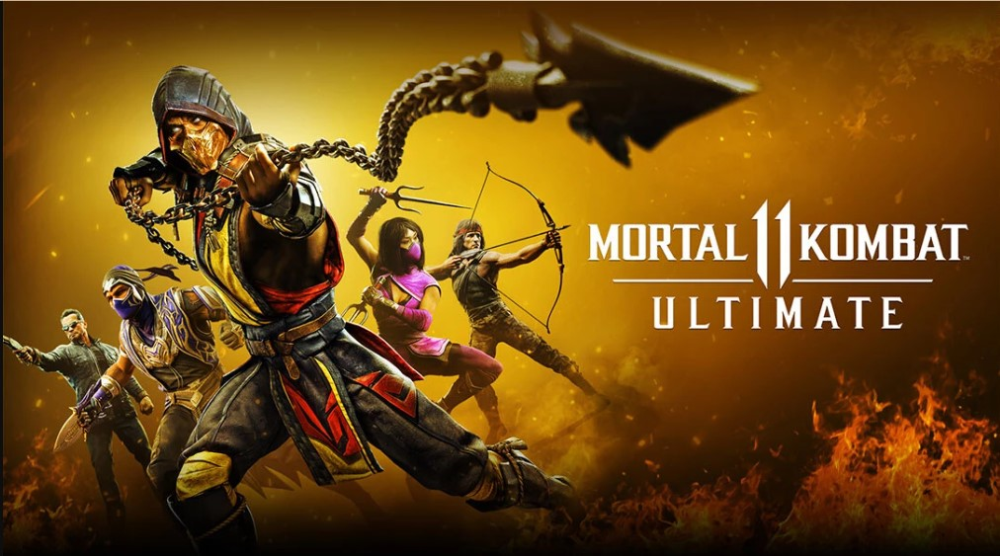
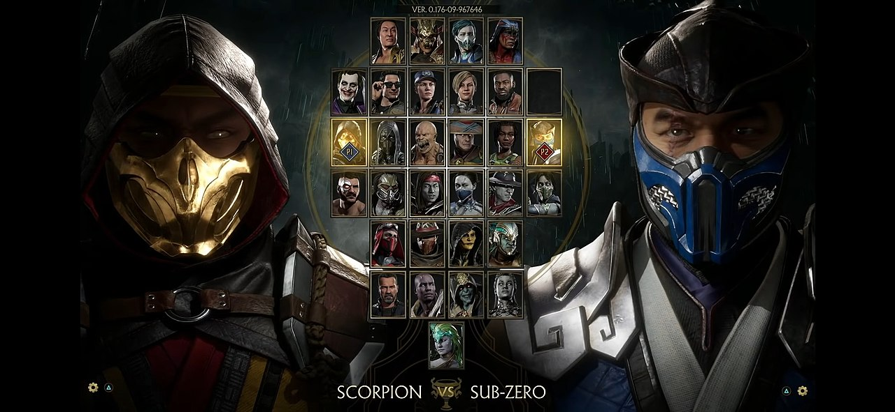
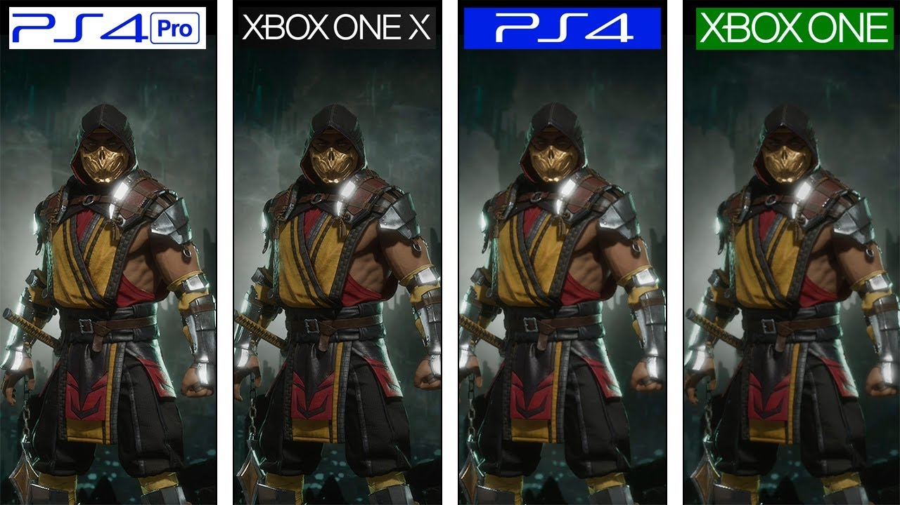

MK está de vuelta mejor que nunca con la siguiente evolución de la emblemática franquicia.
Juego principal
La Edición Estándar de Mortal Kombat 11 incluye:
- Juego principal
CONTENIDO ADICIONAL PARA ESTE JUEGO
- Mortal Kombat 11 Ultimate Add-On Bundle
- Mortal Kombat 11 Kombat Pack 2
- Mortal Kombat 11: Aftermath Expansion
- Mortal Kombat 11 Kombat Pack 1
- Mortal Kombat 11 Klassic MK Movie Skin Pack
Personajes
Con las nuevas variaciones de personaje tendrás un control sin precedentes para personalizar a tus luchadores y hacerlos únicos. El nuevo motor gráfico resalta cada uno de los momentos más sangrientos para ponerte tan cerca de la pelea que casi podrás sentirla. Con un reparto de luchadores nuevos y klásicos, el modo historia cinemático continúa la épica saga iniciada hace más de 25 años.
Graficos
Gráficos de Mortal Kombat 11 en Xbox One, PS4, Xbox One X y PS4 Pro.